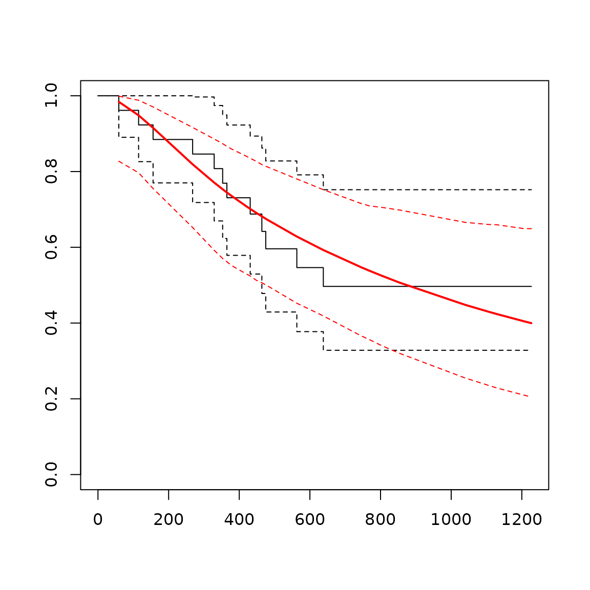

Distributions
The heemod package provides a number of ways to estimate
transition probabilities from survival distributions. Survival
distributions can come from at least three different sources:
- User-defined parametric distributions with
define_surv_dist()ordefine_surv_spline(). - Fitted survival models with a Kaplan-Meier estimator or parametric
distributions with
define_surv_fit() - Survival Tables with
define_surv_table()
Once defined, each of these types of distributions can be combined and modified using a standard set of operations.
User-defined parametric distributions are created using the
define_surv_dist() and define_surv_spline()
functions:
surv_dist_1 <- define_surv_dist(
distribution = "exp",
rate = .5
)
surv_dist_2 <- define_surv_spline(
scale = "odds",
gamma = c(-11.643, 1.843, 0.208),
knots = c(4.077537, 5.883183, 6.458338)
)## Loading required namespace: flexsurvFitted Kaplan-Meier curves are created using
survival::survfit() wrapped into
define_surv_fit()
## Loading required package: survival
fit_w <- flexsurvreg(
formula = Surv(futime, fustat) ~ 1,
data = ovarian, dist = "weibull"
) |>
define_surv_fit()
plot(fit_w)
fit_spl <- flexsurvspline(
formula = Surv(futime, fustat) ~ 1,
data = ovarian,
scale = "odds",
k=1
) |>
define_surv_fit()
plot(fit_spl)
Fitted models can include covariates. In order to use a model with
covariates in heemod, you can use the set_covariates()
function on the fitted model and provide as additional arguments the
covariate values you want to model. You can also provide a data frame of
covariate levels to aggregate survival probabilities over different
groups. By default, heemod will aggregate over predicted survival
probabilities for each subject in the dataset to which the model was
fit.
fit_cov <- flexsurvreg(
formula = Surv(rectime, censrec) ~ group,
dist = "weibull",
data = bc
)|>
define_surv_fit()
plot(fit_cov)## No covariates provided, returning aggregate survival across all subjects.
fitcov_good <- set_covariates(fit_cov, group = "Good")
fitcov_medium <- set_covariates(fit_cov, group = "Medium")
fitcov_poor <- set_covariates(fit_cov, group = "Poor")Similar functionality is also available for fitted parametric models
created using flexsurv::flexsurvreg() and
flexsurv::flexsurvspline() wrapped into
define_surv_fit()
library(survival)
km_1 <- survfit(
formula = Surv(futime, fustat) ~ 1,
data = ovarian
) |>
define_surv_fit()
km_cov <- survfit(
formula = Surv(rectime, censrec) ~ group,
data = bc
) |>
define_surv_fit()
plot(km_cov)## No covariates provided, returning aggregate survival across all subjects.
km_good <- set_covariates(km_cov, group = "Good")
km_medium <- set_covariates(km_cov, group = "Medium")
km_poor <- set_covariates(km_cov, group = "Poor")Operations
Once defined, treatment effects of various types can be applied to any survival distribution:
- Hazard ratio:
apply_hr(). - Odds ratio:
apply_or(). - Acceleration factor:
apply_af().
In addition, distributions can be combined using a variety of operations:
- Join survival distributions together:
join(). - Mix two (or more) survival distributions:
mix(). - Combine two (or more) survival distributions as independent risks:
add_hazards().
km_poor_join <- join(
km_poor,
fitcov_poor,
at = 365
)
models_all <- mix(
fitcov_good, fitcov_medium, fitcov_poor,
weights = c(0.25, 0.25, 0.5)
)
combined_risks <- add_hazards(
fit_w, fitcov_good
)The transition or survival probabilities are computed with
compute_surv(). Time (usually model_time or
state_time) needs to be passed to the function as a
time argument.
compute_surv(surv_dist_2, time = 1:5)## [1] 8.780223e-06 2.271877e-05 3.500128e-05 4.649850e-05 5.747782e-05All these operations can be chained with the |> pipe
operator.
fit_cov |>
set_covariates(group = "Good") |>
apply_hr(hr = 2) |>
join(
fitcov_poor,
at = 3
) |>
mix(
fitcov_medium,
weights = c(0.25, 0.75)
) |>
add_hazards(
fit_w
) |>
compute_surv(time = 1:5)## [1] 0.0004011356 0.0004736851 0.0005069766 0.0005490092 0.0005692261Applications
Transition matrix
For the example we define a simple model with only 1 strategy.
param <- define_parameters(
p1 = compute_surv(
surv_dist_1,
time = model_time # can also be state_time
),
p2 = km_1 |>
join(fit_w, at = 730) |>
compute_surv(
time = model_time,
cycle_length = 365 # time is in days in km_medium, in years in model_time
)
)
tm <- define_transition(
C, p1 - p2, p2,
0, C, p2,
0, 0, C
)## No named state -> generating names.
plot(tm)## Loading required namespace: diagram
sA <- define_state(
cost = 10, ut = 1
)
sB <- define_state(
cost = 20, ut = .5
)
sC <- define_state(
cost = 0, ut = 0
)
stratTM <- define_strategy(
transition = tm,
A = sA, B = sB, C = sC
)
resTM <- run_model(
parameters = param,
stratTM,
cycles = 15,
cost = cost, effect = ut
)## No named model -> generating names.## No covariates provided, returning aggregate survival across all subjects.
## No covariates provided, returning aggregate survival across all subjects.
plot(resTM)Partitioned survival model
A partitioned survival model can also be computed:
ps <- define_part_surv(
pfs = surv_dist_1,
os = km_1 |>
join(fit_w, at = 730),
cycle_length = c(1, 365) # 1 for pfs, 365 for os
)## No named state -> generating names.
stratPS <- define_strategy(
transition = ps,
A = sA, B = sB, C = sC
)
resPS <- run_model(
stratPS,
cycles = 15,
cost = cost, effect = ut
)## No named model -> generating names.## No covariates provided, returning aggregate survival across all subjects.
## No covariates provided, returning aggregate survival across all subjects.
plot(resPS)